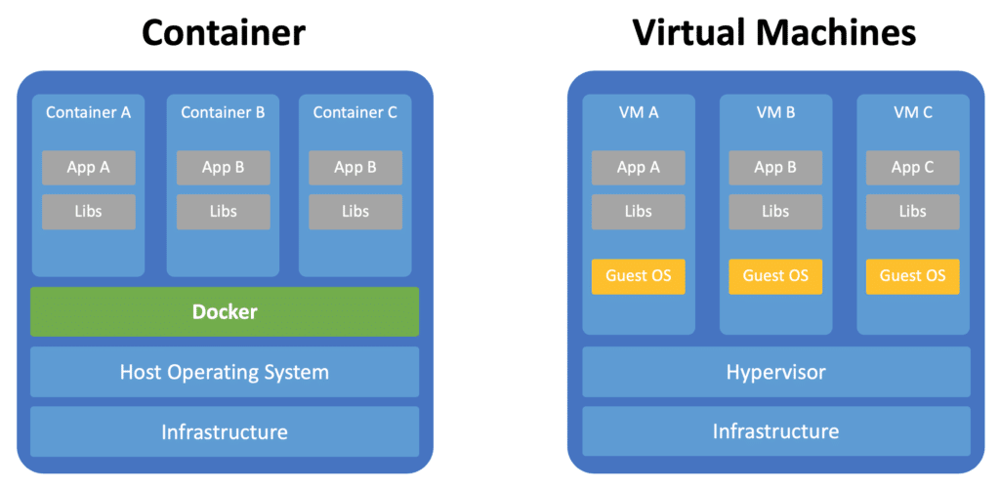

Docker Basic Concepts
What is containerization technology
Containers share the host kernel, making them lightweight, isolated, and efficient—unlike virtual machines, which require a full operating system. The following diagram shows the basic architecture of Docker containers:
- The upper layer consists of multiple containers (App A-F), each container independently runs an application.
- The middle layer is Docker, which is responsible for managing these containers.
- The bottom layer is the host operating system (Host OS) and infrastructure, providing hardware and system support for containers.

1. Pain Points of Traditional Application Deployment
In traditional application deployment, we often encounter the following problems:
- Inconsistent environments: Applications run normally in the development environment but encounter issues in the testing or production environment
- Complex dependency management: Different applications require different versions of runtimes, library files, etc.
- Low resource utilization: Traditional virtual machines require a full operating system, consuming a large amount of resources.
- Complex deployment: Requires manual environment configuration and dependency installation, which is error-prone.
2. Solutions with Containerization Technology
Containerization technology solves these problems in the following ways:
- Environment standardization: Package the application along with its dependencies to ensure consistent operation in any environment
- Lightweight: Containers share the host operating system kernel, making them lighter than virtual machines.
- Rapid deployment: Containers can start within seconds, greatly improving deployment efficiency.
- Portability: Build once, run anywhere
3. Core Concepts of Containerization
Containerization follows the philosophy of "immutable infrastructure":
- Applications and environments are packaged into immutable images.
- Use the same image for every deployment
- Configuration is injected via environment variables or configuration files.
- Fix issues by rebuilding the image rather than modifying running containers
Docker Core Concepts
1. Image
definition: An image is a read-only template that contains everything needed to run an application: code, runtime, library files, environment variables, and configuration files.
Features：
- Layered storage: An image consists of multiple layers, each representing a modification.
- Read-only: The image itself is read-only and cannot be modified directly.
- Reusable: The same image can be used to create multiple containers
- Version management: Version management is performed using tags.
Analogy: An image is like an installer or template; it defines everything needed to run the application, but it cannot run directly by itself.
2. Container
definition: A container is a running instance of an image, a lightweight, portable execution environment.
Features：
- Isolation: Each container has its own file system, network, and process space.
- Temporary: Containers can be created, started, stopped, and deleted.
- Writable layer: A container adds a writable layer on top of the image.
- Process-level: Usually one main process runs inside a container
Analogy: If the image is a class, then the container is an object instance. One image can create multiple containers, just as one class can create multiple objects.
3. Repository
definition: A repository is a place to store and distribute images, and it can contain multiple versions of an image.
Category：
- Public repository: Such as Docker Hub, which anyone can use.
- Private repository: Set up within an enterprise to store private images.
- Official repository: Image repositories maintained by the software vendor
Registry vs Repository：
- Registry: Registry servers, such as Docker Hub
- Repository: Specific image repositories, such as nginx, mysql.
Differences Between Docker and Virtual Machines
1. Architecture comparison
| Features | Virtual machine | Docker container |
|---|---|---|
| Isolation level | Hardware-level virtualization | Operating system-level virtualization |
| Operating system | Each VM requires a full OS | Shares the host OS kernel |
| Resource usage | Heavyweight, consumes more resources | Lightweight, low resource consumption |
| Startup time | Minute-level | Second-level |
| Performance overhead | Relatively large | Near-native performance |
| Image size | GB-level | MB-level |
2. Container vs. Virtual Machine Architecture

3. Use Case Comparison
VM applicable scenarios：
- Requires a fully isolated environment
- Run applications of different operating systems
- Requires hardware-level security isolation
Scenarios Suited for Docker Containers：
- Microservices architecture
- CI/CD pipeline
- Rapid application deployment and scaling
- Development environment standardization
Docker's advantages and application scenarios.
Main advantages
1. Environment Consistency
- Problem Solving: The "it works on my machine" problem
- Implementation Approach: Application and environment are packaged together
- Value: Reduces environment-related bugs and deployment issues
2. Lightweight and Efficient
- Resource Utilization: Uses fewer resources than virtual machines
- Startup Speed: Second-level startup time
- Density: A single machine can run more application instances
3. Portability
- Cross-platform: Supports Linux, Windows, and macOS
- Cloud Native: Migration across various cloud platforms
- Hybrid Environment: Develop locally, deploy in the cloud
4. Version Control and Rollback
- Image Version: Each version has a corresponding image
- Fast Rollback: Quickly roll back to the previous version when issues occur
- A/B Testing: Run different versions simultaneously for comparison
5. Scalability
- Horizontal Scaling: Quickly create more container instances
- Elastic Scaling: Automatically adjusts the number of containers based on load
- Microservices: Service splitting and independent deployment
Typical application scenarios
1. Microservices Architecture
- Service Decomposition: Each microservice is independently containerized
- Independent Deployment: Services can be independently updated and scaled
- Technology Stack Freedom: Different services can use different technologies
2. CI/CD pipeline
- Build Environment: Standardized build environment
- Test Isolation: Each test runs in an independent container
- Deployment Consistency: The same image is deployed in different environments
3. Development Environment Standardization
- Quick Setup: New members quickly obtain a development environment
- Version Sync: The team uses the same development environment
- Dependency Management: Avoids local environment conflicts
4. Application Modernization
- Legacy System: Containerizing traditional applications
- Cloud Migration: Helps migrate applications to cloud platforms
- Hybrid Cloud: Portability across different cloud environments
Docker Architecture Components
Overall Architecture Diagram

Docker Client
Features：
- The main ways users interact with Docker.
- Receives user commands and sends them to the Docker Daemon.
- Can communicate with a remote Docker Daemon.
Common Commands：
docker run- Run containerdocker build- Build imagedocker pull- Pull imagedocker ps- View container status
Docker Daemon
Features：
- Docker's core service process
- Manages images, containers, networks, and storage volumes
- Listens for and processes Docker API requests.
Main Responsibilities：
- Image management (building, storing, distributing)
- Container lifecycle management
- Network Management
- Data Volume Management
- Communicate with Registry
Docker Engine
Composition：
- Docker Client + Docker Daemon + REST API
- It is a core component of Docker
Workflow：
- Client sends commands to Daemon
- The Daemon parses and executes commands
- Interacts with the Registry (if needed).
- Manages local images and containers
- Return results to Client
Docker Registry
Function：
- Stores and distributes Docker images
- Provides image version management
- Supports public and private registries
Docker Hub Features：
- Official public Registry
- Contains a large number of pre-built images
- Supports auto-build functionality
- Free and paid services
Docker Development History
Key milestones
- 2013: Docker open-source release
- 2014: Docker 1.0 released, available for production use.
- 2016: Docker Swarm released, with built-in orchestration features.
- 2017: Docker is divided into CE (Community Edition) and EE (Enterprise Edition).
- 2019: Docker Desktop released, improving the developer experience.
Ecosystem development
- Container Orchestration: Kubernetes becomes the de facto standard.
- Container Runtime: containerd, CRI-O and other alternatives
- Image Format: OCI standard specification
- Security Tools: Container security scanning and monitoring tools